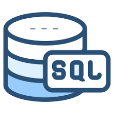
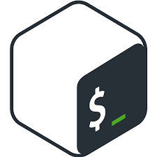
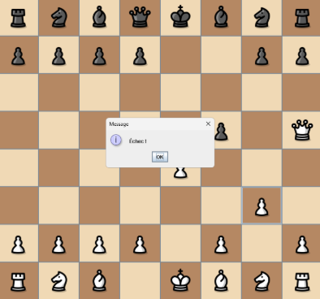
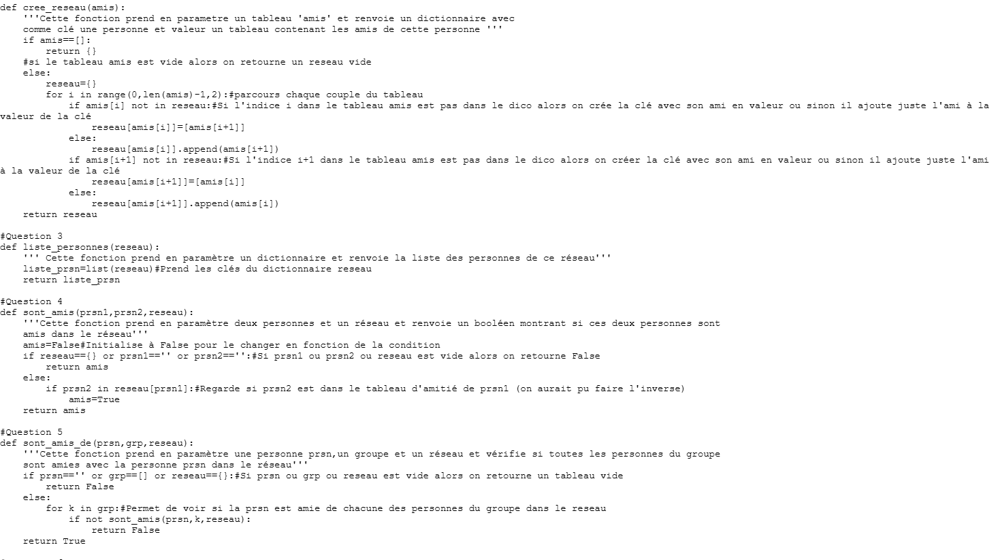
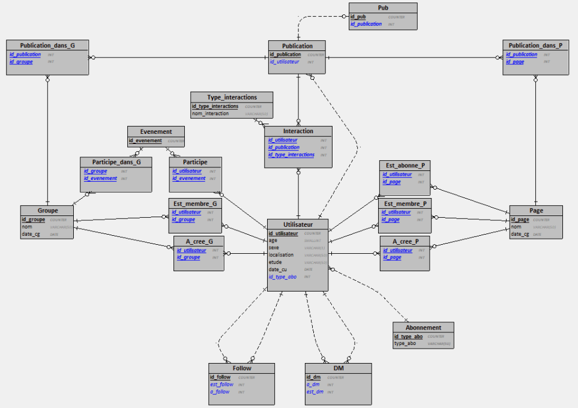
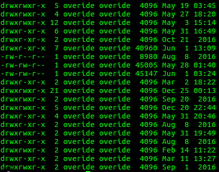

Java
Expérience en programmation orientée objet, développement d'applications back-end.
Je suis un étudiant en deuxième année de BUT informatique qui apprécie le développement logiciel et la base de données. J'aime concevoir des solutions où performance, lisibilité et maintenance vont de pair. Actuellement, je pratique principalement : Java, Python et SQL.
Je souhaite me spécialiser dans la programmation web, le développement logiciel, ou depuis peu la recherche scientifique. Pour atteindre cet objectif, je souhaite développer mes compétences en développement et conception d'application, travail en équipe, ainsi qu'en gestion de projet. Pour le développement et la conception d'application, je veux maîtriser Python et Java que je connais déjà, mais aussi apprendre de nouveaux langages qui me spécialiseront pour mon futur métier. Je veux aussi apprendre à travailler en équipe et connaître les bonnes pratiques en entreprise, pour pouvoir un jour diriger une équipe dans la réalisation d'un projet web. À côté de mes études, je passe du temps dans une association de quartier, cela me permet de garder un contact humain et de m'entraîner à prendre la parole, ce qui m'aide tant personnellement que professionnellement.
Depuis mon entrée à l'université, j'ai participé à des projets allant de simulations de réseaux sociaux à un jeu d'échec. J'apprécie le travail en équipe, l'écriture et la revue de code. Ce portfolio regroupe une sélection de mes meilleurs projets et détaille mon parcours, mes compétences, et mes contacts.
Durant mon parcours universitaire, j'ai développé de multiples connaissances que j'ai pu approfondir durant les différent projets ainsi que durant mon stage.
J'ai pu approfondir mes connaissances en Python, notamment en développant web, en apprenant à utiliser le framework Flask, ce qui m'a permis de faire mon premier site web local.
L'université m'a aussi permis de découvrir et de maîtriser Java, en apprenant principalement la manipulation de fichier et le développement web.
J'essaye aussi demon côté de maîtriser la modélisation 3D, ce qui m'a permis de modéliser le bâtiment d'une association de mon quartier.
Depuis mon arrivée dans le BUT, j'essaye aussi de maîtriser des compétences qui me serviront non seulement professionnellement, mais aussi et surtout personnellement.
C'est notamment pour avancer dans cette direction que je m'améliore sans cesse à l'oral. J'ai participé au concours d'éloquence de ma promotion, et que j'améliore mon aisance à l'oral.
En dehors de mes compétences, je sais bien expliquer des notions complexes, et rendre simple la compréhension de certains points approfondis. Cela m'a été utile lorsque j'ai donné des cours particuliers à des enfants pour l'apprentissage d'une nouvelle langue.
L'informatique est un secteur qui évolue sans cesse. Des chercheurs et des entrepreneurs repoussent les uns après les autres des limites que l'on pensent tous infranchissables. Un changement dans notre vision du monde et mode de vie est sur le point de nous boulverser. Nous sommes à l'aube d'un monde connecté, un monde où l'information tourne plus vite que l'on ne peut le penser. C'est pour être acteur de ce changement que je poursuis mes études en informatique. Je veux faire avancer l'informatique aux côtés de passionnés comme moi, pour dépasser les attentes des utilisateurs et construire un monde qu'on pensait inimaginable. En clair, l'informatique est, pour moi, l'outil d'un changement futur majeur, auquel je veux apporter mon empreinte.
Connaissances techniques et outils.
Expérience en programmation orientée objet, développement d'applications back-end.

Ecriture de fonctions, programmes, utilisation de fichier json, et programmation orientée objet.

Modélisation de bases de données relationnelles, optimisation de requêtes, transactions et analyse de chemin utilisé.

Apprentissage des bases en langage Bash Shell.
Durant ma deuxième année au sein du BUT, nous avons eu un projet à réaliser au cours du premier semestre, puis à améliorer au second semestre.
Le projet Mnémosyne était le suivant : une plateforme web permettant de suivre l'avancée d'une cohorte de l'IUT au cours des années.
Nous devions afficher la cohorte en montrant combien d'étudiant réussissaient leur annéee, se réorientaient, etc. Et ce, à l'aide de données fournies par l'API universitaire sous forme de fichiers JSON, qui ont alimenté une base de données.
Il y avait aussi une partie statistique qui permettait de voir, par exemple, le taux de réussite chaque année, la moyenne générale de la promo, ou bien le nombre d'élèves qui se réorientent.
Un administrateur pouvait aussi décider de modifier les règles d'affichages des cohortes. Par exemple, il pouvait faire en sorte que seule les élèves ayant une moyenne supérieure à un certain nombre soient pris en compte au moment de l'affichage de la cohorte.
Cette section nous montre ma contribution personnelle à ce projet de groupe au cours des deux semestres de ma deuxième année.
Pour le premier semestre, nous avons commmencer notre projet à partir de rien. Personnellement, j'ai mobilisé mes connaissances en base de données et en Python afin de pouvoir peupler notre base de données. Nous avions reçu des fichiers JSON que je devais filtrer et utiliser pour remplir les différentes tables de notre base de données.
| Objectif | Peupler la base de données |
| Tâches réalisées Personnellement |
Principale : Écriture du script de peuplement de la base de données Secondaire : Supervision de l'écriture des méthodes d'ajout de règles d'affichage des données sur le site |
| Compétences acquises | Manipulation de fichiers JSON désordonnés pour peupler une base de données avec SQLite3 (Python). Travail en binôme : supervision mutuelle et utilisation de Git pour partager les informations Revue de code fait par mon camarade en Flask (Python), correction du code si nécessaire et réflexion sur les possibles améliorations. |
| Explication du travail | À partir de fichiers JSON venant d'une API de l'université, j'ai extrait des données précises (notes, décision de jury, etc.) pour peupler notre base de données.
Cela a permis au groupe d'avoir des données filtrées et triées dans une base de données propre et non des fichiers JSON bruts. J'ai aussi apporté mon expertise en Flask pour aider mon camarade à mettre en place des règles (note > 10, décision = Approuvé, etc.) d'affichage des données. |
| Pistes d'amélioration Pour le S4 | Séparation plus efficace des données à extraire depuis les fichiers JSON pour la base de données. Rendre l'interface utilisateur plus intuitive et facile d'utilisation. |
Pour le second semestre, nous avons repris notre projet pour l'améliorer. Personnellement, j'ai mobilisé mes connaissances afin de pouvoir améliorer la page administrateur, notamment la gestion de la modification des règles d'affichage de la cohorte. Nous avons décidé pour la page administrateur qu'il y aurait un administrateur "suprême", avec comme seule différence avec les autres administrateurs que lui peut décider de créer des administrateurs.
| Objectif | Améliorer la page administrateur |
| Tâches réalisées Personnellement |
Principale : Écriture des méthodes pour prendre en compte les règles d'affichages des cohortes. Secondaire : Amélioration de l'accès aux données de la base de données en utilisant SQLite3. |
| Compétences améliorées | Développement backend pour la gestion de l'administrateur en utilisant Python(Flask), notamment la gestion des sessions. Travail en équipe : coworking en appel nous permettant d'intervenir rapidement pour aider les autres et de recevoir l'aide des autres. Revue de code fait par mon camarade en utilisant SQLite3 pour prendre en compte les différentes règles définies par l'administrateur. |
| Explication du travail | Je suis intervenu sur l'écriture des différentes méthodes de la page d'administrateur, notamment pour ajouter des règles et ajouter d'autres administrateurs. J'ai dû mobiliser mes connaissances en Flask pour la gestion des sessions pour pourvoir coder la diiférence entre les deux administrateurs.
J'ai aussi apporté mon expertise en SQLite cette fois-ci pour aider mon camarade à prendre en compte les règles d'affichage des données au moment où l'on accède à la base de données. |
| Pistes d'amélioration Pour le BUT3 | Plus de prise de responsabilités. Je me suis senti plus en retrait comparé à mes camarades durant ce projet, notamment au second semestre, je dois essayer, à l'avenir, de prendre plus de responsabilités et par exemple m'occuper personnellement d'une partie entière du projet. Utilisation de Github. Pour ce projet, étant en binôme à chaque mission, mon binôme d'occupait souvent de pousser le travail fait vers le Git partagé. Cela faisait que mon travail passait un peu inaperçu. Je dois, à l'avenir, faire moi même des poussées vers le Git pour montrer ma contribution au projet. |
Cinq projets pour vous convaincre !




Une chronologie des étapes de mon parcours scolaire.
Fascination pour les objets technologiques. Comment ça marche ? Pourquoi ça fait ça ?
Lycée Maurice Utrillo — Mention Bien. Spécialités Mathématique et Numérique Science Informatique.
Actuellement en deuxième année, parcours Réalisation d'Application, Conception, Développement et Vérification.
Convaincu ? Voici mes coordonnées. N'hésitez pas à me contacter pour avoir mon CV.